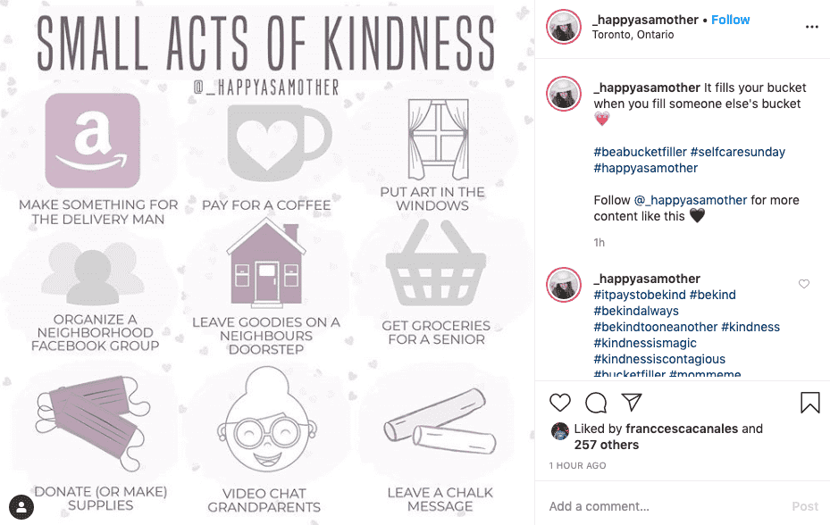

Developing Strategies for Mental & Physical Well-Being During a Pandemic
Jaymie Rosen
hello@jaymierosen.com
COVID-19
What is COVID-19?
Coronaviruses are a large family of viruses which may cause illness (flu-like illness) in animals or humans. COVID-19 is the infectious disease caused by the most recently discovered coronavirus. This new virus and disease were unknown before the outbreak began in Wuhan, China, in December 2019.
Symptoms include: fever, tiredness, dry cough, shortness of breath, aches and pains, nasal congestion, runny nose, and a sore throat.
The virus can spread through droplets from the nose or mouth from another person.
Resource: Q&A on coronaviruses (COVID-19)
How to Protect Yourself
-
Wash your hands with soap (for at least 20 seconds) regularly, especially after coming back from being in public
-
Maintain a 1 metre (3 feet) distance away from others
-
14 day quarantine if you have been around someone who has had symptoms/infected with COVID-19, or you feel the symptoms
-
Even if you feel healthy, stay home as much possible, unless you need food, supplies, etc.
-
Do not touch your face
-
Cough into your elbow; if you sneeze/blow your nose into a tissue, immediately it out
Physical Distancing
"Social distancing makes it sound like people should stop communicating with one another,
while instead we should be preserving as much community as we can even while we keep our physical distance from one another"
Resource: Why 'physical distancing' is better than 'social distancing'
Isolation
-
Enforced isolation: feel like you're losing connection to your family, friends and co-workers
-
Feelings of hopelessness (especially if you are not working/lost your job), loneliness, feeling lazy, lack of motivation, depression, anxiety, agoraphobia/germaphobia
-
Worries about money (rent, food, supplies), how will you support yourself financially, financially taking care of family members/children/pets, etc.
-
Use technology to communicate during this time
-
How to get help: Shoppers Drug Mart, camh, online therapy, Stella's Place, online doctors
Working from home
-
Declutter and set up an "office space"; make it look like your desk at work
-
Set up work space near natural light
-
Keep a similar routine (ex. going for lunch at same time)
-
Communicate with co-workers (ex. have a virtual lunch)
-
Take breaks often (ex. go for a quick walk outside)
FACE COVID
are a set of practical steps for responding effectively to the COVID-19 crisis; uses the principles of acceptance and commitment therapy (ACT)
Resource: https://drive.google.com/file/d/1w5sySK40Wn9tvYd5KMYicufaUlX9cO-g/view?usp=sharing
Focus on what you can control
- When facing a crisis of any sort, fear and anxiety are inevitable; they are normal, natural responses to challenging situations infused with danger and uncertainty
- Instead of focusing on the uncertainty, focus on what you can control
- Take one day at a time
Acknowledge your thoughts and feelings
- Recognize when you are having anxious thoughts: "I’m noticing anxiety", "There’s my mind worrying", or "I’m having thoughts about getting sick"
- Write down your feelings
Come back into your body
- Ground yourself: breathing, sit down on a hard surface, meditate, clasping hands together, do yoga, etc.
- Eat well, keep your immune system strong, drink water, get good sleep, exercise, manage stress
- Gain as much control as possible over your physical actions, even though you can’t control your feelings
Engage in what you're doing
- Get a sense of where you are, and re-focus your attention
- Notice what you can see, hear, smell, and what you're doing
Drop anchor & do ACE
Curb negative or worrying thoughts, be more engaged/focused, grounded, steadying yourself in problematic situations, and curb obsession over worrying
Committed action:
action you take because it’s truly important to you; actions (besides handwashing, physical distancing) you take even if it brings up difficult thoughts & feelings
- Looking out for yourself: self-care, physical exercise, cooking/baking, cleaning, playing games with friends online
- Looking out for others: comfort, communicate, offer to help, volunteering opportunities
Opening up
- Acknowledge that fear, anxiety, anger, sadness, guilt, confusion and frustration are normal
- Self-kindness and self-compassion
- Self-care is important
- eBook on self-compassion: https://drive.google.com/file/d/1__Q3UcT9Q8VuSbiRm7x7-xjaxy5xkrba/view
Beyoncé said she only gives herself one day to feel sorry for herself when she's down, but in those 24 hours she allows herself to truly FEEL it, then she pushes past it because she can't sit and dwell for too long. Queen advice.
— lani 🌱 (@kailaniskye) April 20, 2019
Values
- What can you give back as a person during and after the crisis is over?
- Values may be respect, humour, patience, courage, caring -- how can you use these values to give back?
- Gain new values, like appreciation and gratitude
- Support local small businesses, helping the elderly, awareness about climate change, hygiene, health care systems, how connected the world is, being more resourceful 
Identify resources
- Find reliable (aka not social media*) resources for help, assistance, support and advice (helpful resources here here)
- Finding trustworthy resources online can help you better understand the situation with facts
- *Limit social media activity -- conflict, misinformation, confusion
- Don't obessively look at the news
Disinfect & practice physical distance
- Disinfect your hands regularly and practice as much social distancing as realistically possible, for yourself and others
- Keep your place of residence clean, as well and disinfect objects you touch frequently (ex. phone)
- Physical distancing ≠ cutting off emotionally
Important reminders
Important reminders
This is temporary.
Helpful Resources
-
If you can't work or lost your job, visit: CERB Application